Früh getroffen, spät entschieden: SCH feiert ersten Heimsieg
Der erste Heimsieg der neuen Verbandsliga-Saison ist perfekt. Die Ludwig-Elf setzte sich am Samstagnachmittag mit 2:0 (1:0) gegen den FC An der Fahner Höhe durch und belohnte sich damit auch vor eigenem Publikum. Fabian Schnellhardt brachte die Blau-Weißen bereits in der vierten Minute in Führung, Adrian Wilhelm machte zwölf Minuten vor dem Ende den Deckel drauf.
Schnellhardt sorgt für einen Start nach Maß
Viel besser hätte dieser Nachmittag aus Sicht des SCH kaum beginnen können. Gerade einmal vier Minuten waren gespielt, da lag der Ball bereits im Tor der Gäste. Fabian Schnellhardt erzielte das 1:0 und brachte den SCH früh auf Kurs. Es war genau der Start, den sich die Blau-Weißen nach der 0:2-Niederlage beim ersten Heimspiel gegen den FC Saalfeld gewünscht hatten. Diesmal musste niemand lange auf den ersten Treffer warten. Die frühe Führung gab der Ludwig-Elf zudem die Möglichkeit, die Partie aus einer deutlich angenehmeren Ausgangslage heraus anzugehen. Für Schnellhardt war es bereits das nächste Erfolgserlebnis in den vergangenen Wochen. Zum Saisonauftakt in Bad Frankenhausen hatte der Kapitän den Treffer zum 1:1 erzielt, im Pokal bei der SpVgg Siebleben 06 traf er beim 5:2-Erfolg sogar doppelt.
Ein knapper Vorsprung bis zur Pause
Trotz des frühen Treffers blieb die Partie zunächst offen. Fahner Höhe war mit zwei Siegen aus den ersten beiden ausgetragenen Ligaspielen angereist und hatte erst zwei Wochen zuvor den FSV Schleiz mit 1:0 bezwungen. Entsprechend war klar, dass ein 1:0 allein noch lange keine Entscheidung bedeutete. Weitere Treffer fielen im ersten Durchgang nicht. So ging der SCH mit dem knappen Vorsprung in die Kabine. Es war deshalb ein Nachmittag, an dem Geduld gefragt war. Das zweite Tor wollte zunächst nicht fallen, gleichzeitig durfte die Ludwig-Elf dem Gegner keinen Moment anbieten, mit dem die Partie wieder hätte kippen können.
Die Entscheidung lässt auf sich warten
Der SCH musste deshalb weiterarbeiten und auf den Moment warten, der für mehr Ruhe sorgen würde. Genau dieser Moment kam in der 78. Minute. Adrian Wilhelm traf zum 2:0. Zwölf Minuten vor dem regulären Ende war damit die Vorentscheidung gefallen. Nach Schnellhardts frühem Treffer setzte Wilhelm den zweiten entscheidenden Akzent des Nachmittags. Für den Angreifer war es zugleich die Fortsetzung seines guten Saisonstarts. Schon beim 3:1-Auswärtserfolg in Bad Berka hatte er mit zwei Treffern nach der Pause entscheidenden Anteil am ersten Saisonsieg der Blau-Weißen. Diesmal fiel sein Tor später – und entsprechend groß war die Erleichterung. Aus einem Vorsprung, der über mehr als eine Stunde nur einen Treffer betragen hatte, waren zwei Tore Abstand geworden.
Der erste Heimsieg ist geschafft
Danach brachte die Ludwig-Elf das Ergebnis über die Zeit. 2:0. Drei Punkte. Und zum ersten Mal in dieser Saison ein Sieg vor eigenem Publikum. Drei Pflichtspiele in Folge hat der SCH damit gewonnen.
Auch der Blick auf die Tabelle zeigt den gelungenen Start: Nach vier Partien stehen zwei Siege, ein Unentschieden und eine Niederlage zu Buche. Mit sieben Punkten und 6:4 Toren rangieren die Blau-Weißen aktuell auf Platz fünf.
Doch gerade nach einem solchen Nachmittag bleibt die Einordnung wichtig. Trainer Alexander Ludwig brachte es nach dem Abpfiff entsprechend nüchtern auf den Punkt: „Die drei Punkte haben wir uns heute hart erarbeitet. Wir sind auf dem richtigen Weg, wissen aber auch: Am Ende sind es nur drei Punkte. Nicht mehr, aber eben auch nicht weniger.“
Jetzt geht es im Pokal weiter
Viel Zeit zum Zurücklehnen bleibt nicht. Bereits am kommenden Samstag, 5. September, geht es für den SCH in der zweiten Runde des Thüringenpokals weiter. Um 13:00 Uhr tritt die Ludwig-Elf beim FSV Wacker 03 Gotha an.
Nach drei Siegen hintereinander geht es damit erneut auswärts weiter. Der erste Heimsieg der Saison darf an diesem Samstag aber erst einmal stehen bleiben.
Spieldaten
1. SC 1911 Heiligenstadt – FC An der Fahner Höhe 2:0 (1:0)
SC Heiligenstadt
Stankovic – Wolanski – Abdoul Aziz – Jeschke – Göbel (74. Dornieden) – Hoch – Wilhelm (83. Vogt) – Michalek (83. Opfermann) – Schnellhardt (86. Lerch) – Voilenko – Fiedler (69. Grimm)
FC An der Fahner Höhe
C. Müller – Kruse – Lischke – Sennewald (65. Wiesner) – Bärwolf – Langner – Schindler – Weiß (82. Brandau) – N. Müller – Bach – Machts (71. Moraru)
Schiedsrichter
Kühne
Zuschauer
310
Tore
1:0 Schnellhardt (4.), 2:0 Wilhelm (78.)
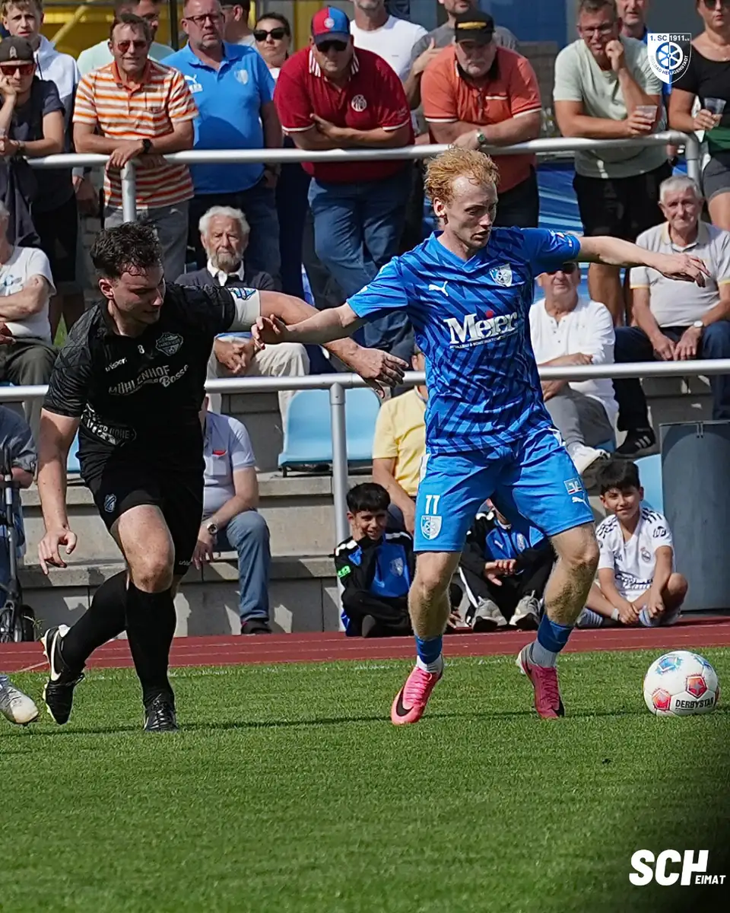
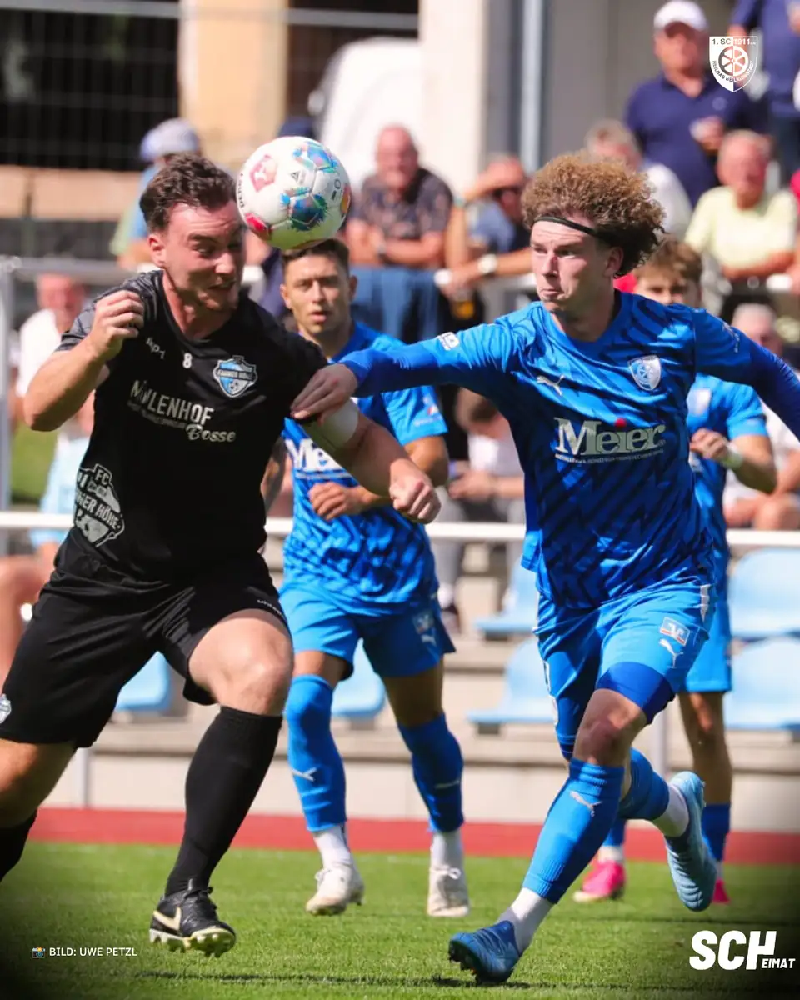
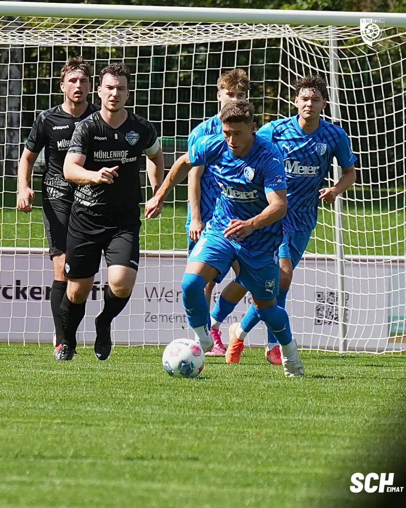
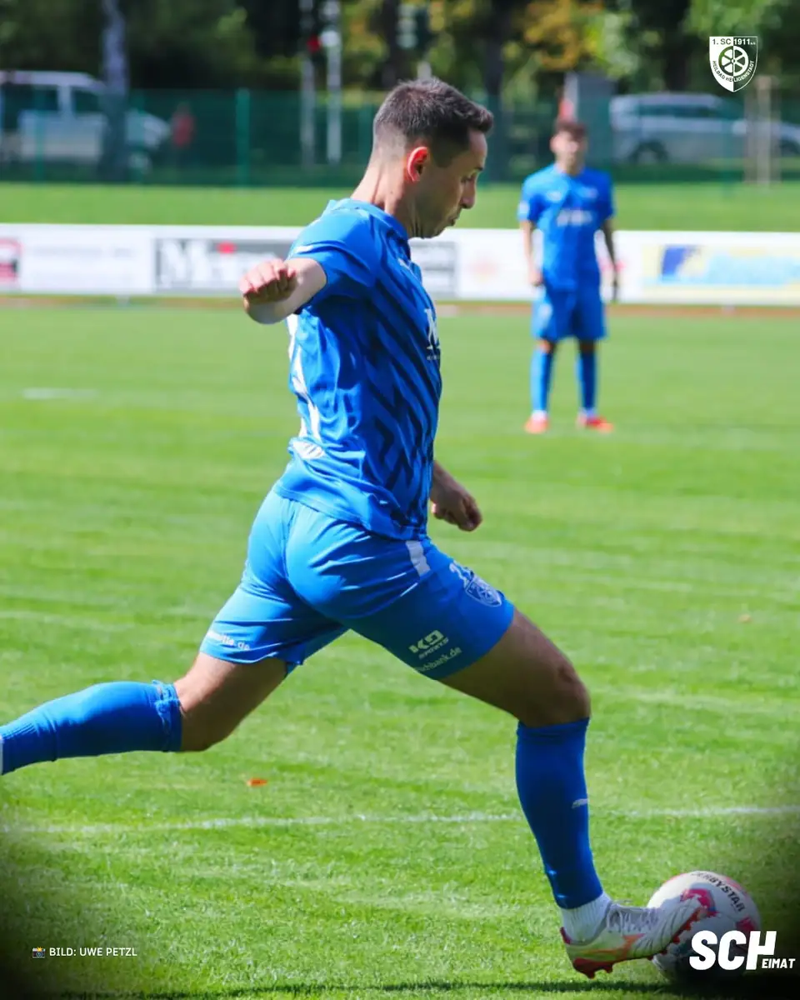
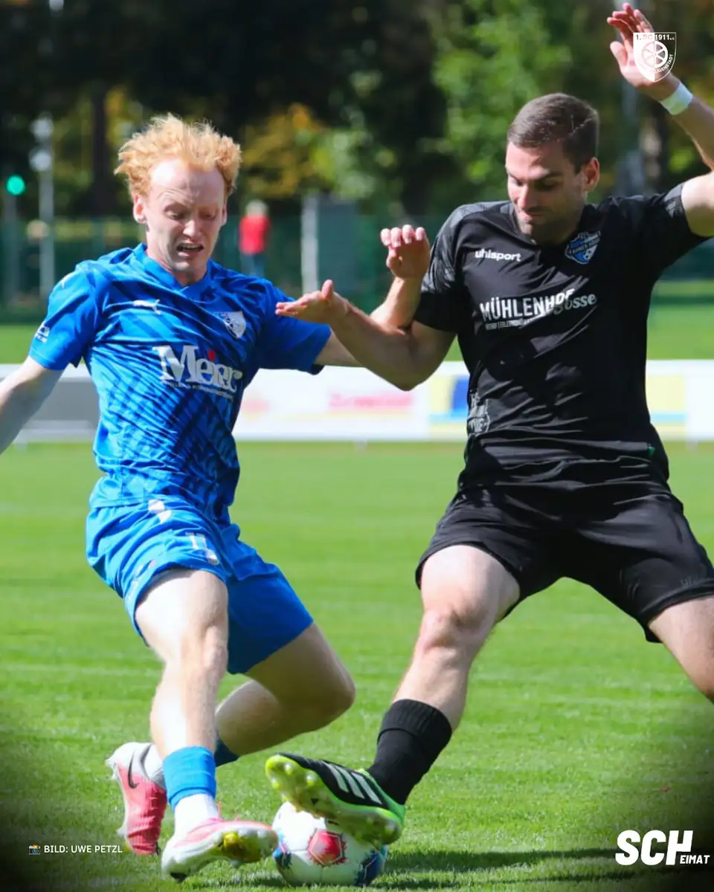
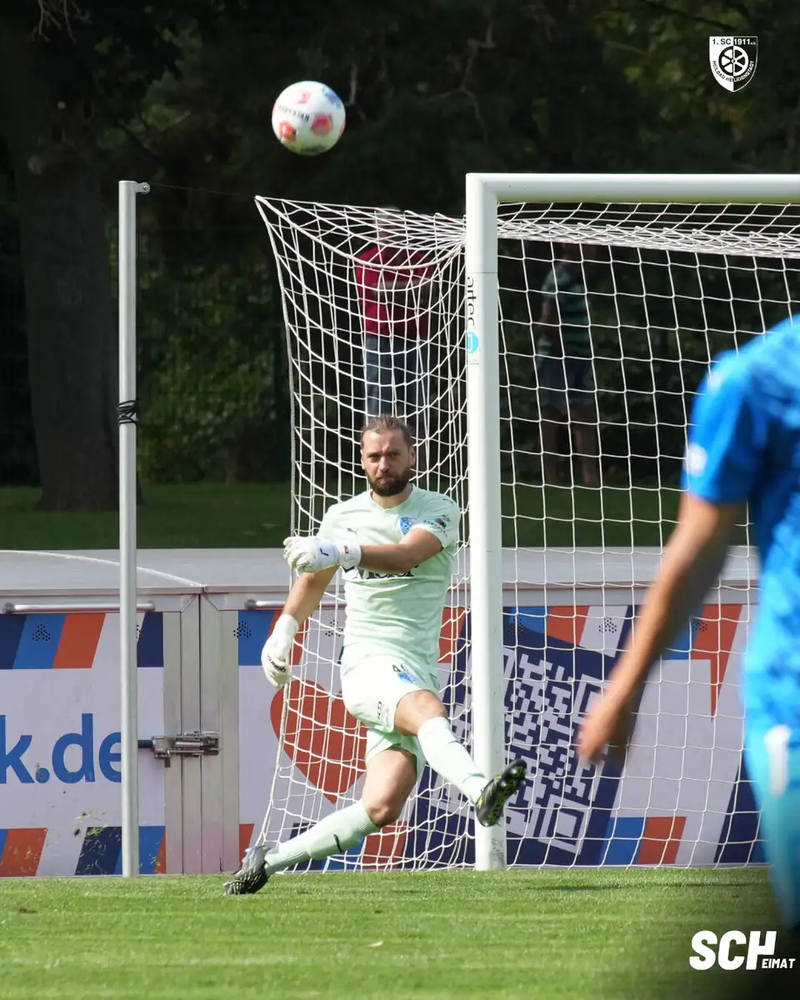
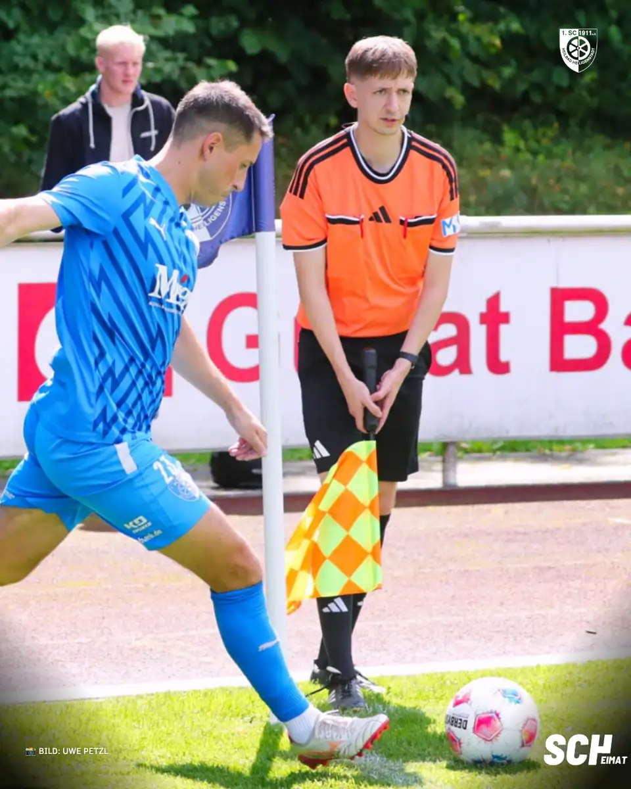
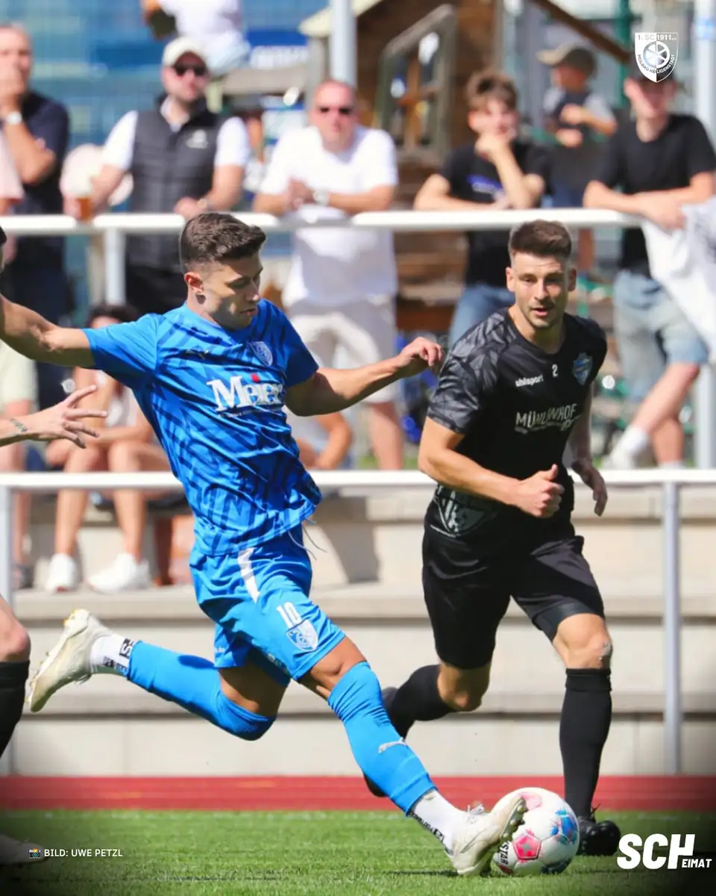
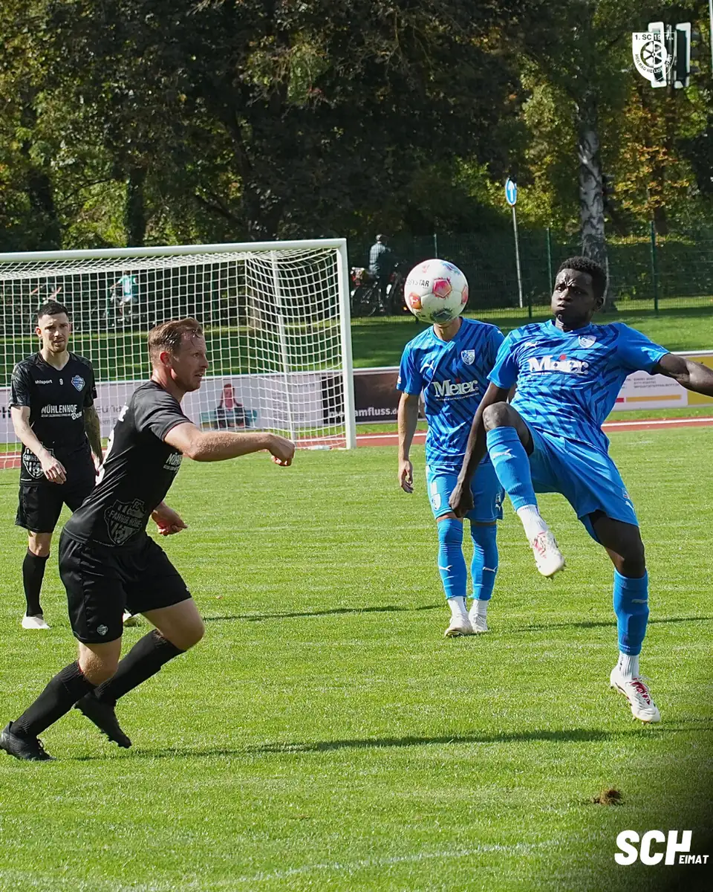
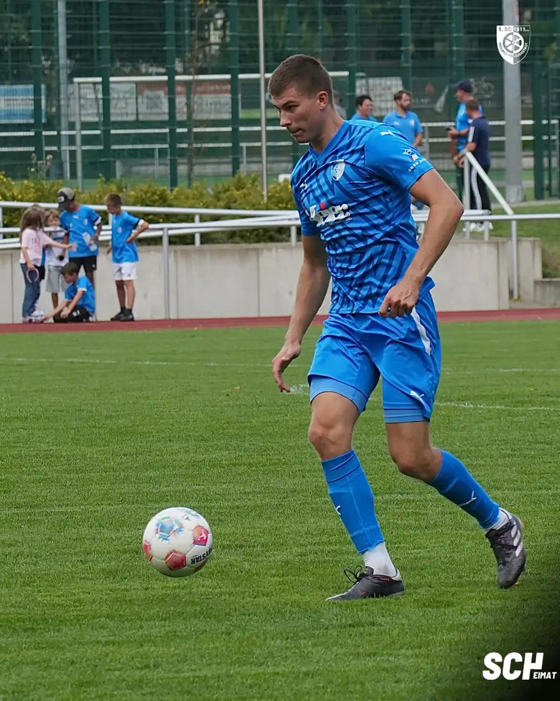
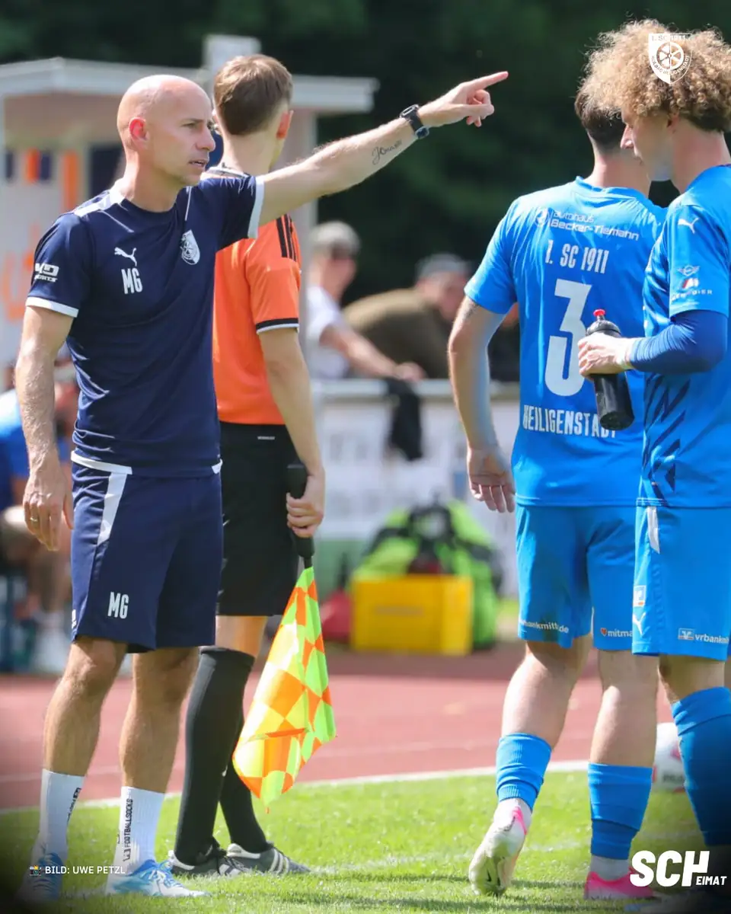
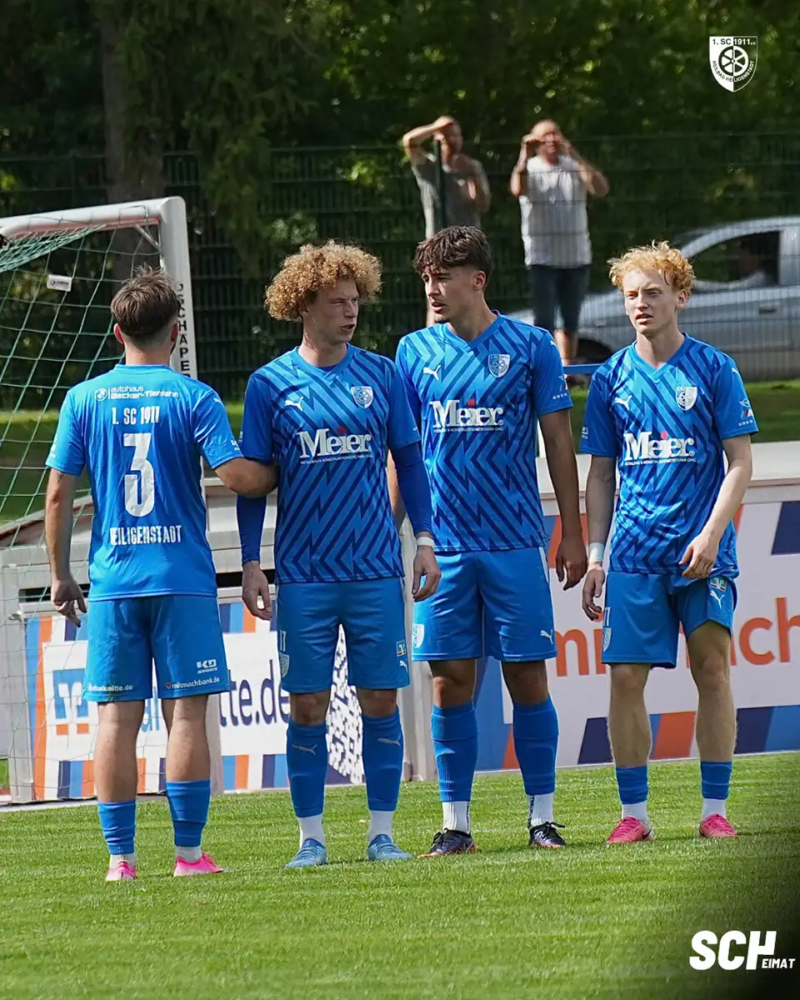
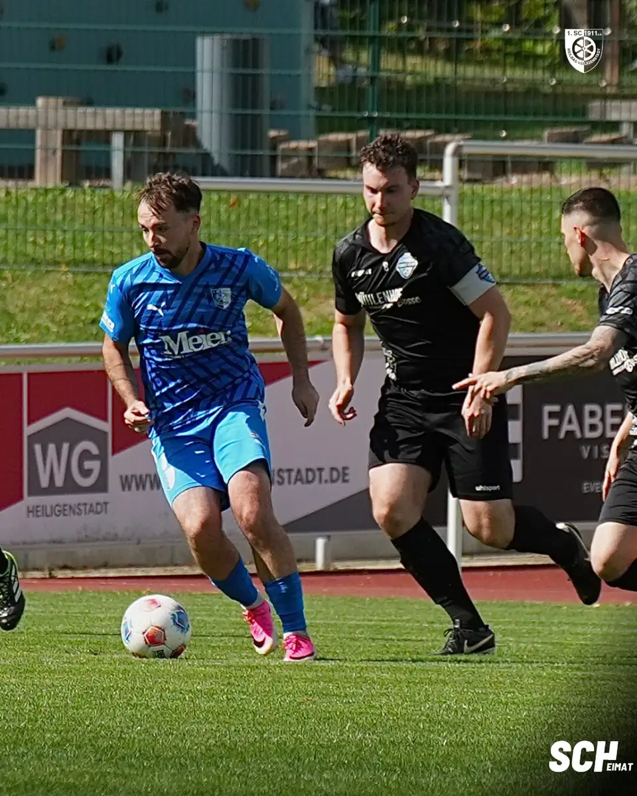